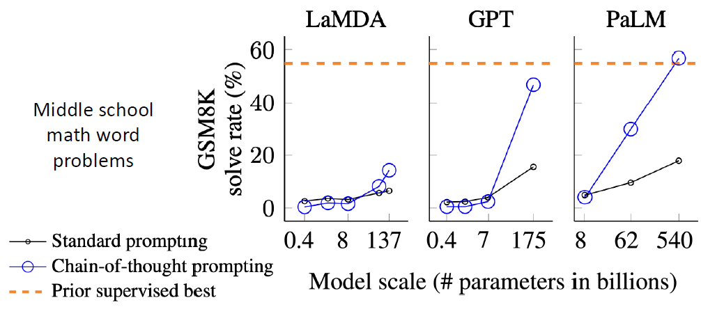

تطبیق کارآمد مدلهای زبانی
بررسی روشهای PEFT و LoRA
تواناییهای نوظهور: تکامل GPT
GPT (2018)
- ۱۱۷ میلیون پارامتر
- دیکودر ترنسفورمر با ۱۲ لایه
- داده: BooksCorpus (۴.۶ گیگابایت شامل ۷۰۰۰ کتاب)
نتیجه: پیشآموزش مدل زبانی در مقیاس بالا برای وظایف پاییندستی موثر است.
GPT-2 (2019)
- ۱.۵ میلیارد پارامتر (۱۰ برابر بزرگتر)
- معماری مشابه GPT، فقط بزرگتر
- داده بسیار بیشتر: ۴۰ گیگابایت (WebText)
- شامل لینکهای ردیت با حداقل ۳ رأی مثبت
Language Models are Unsupervised Multitask Learners
یادگیری بدون نمونه (Zero-shot) نوظهور
توانایی کلیدی GPT-2: انجام وظایف متعدد بدون مثال (No Examples) و بدون بهروزرسانی گرادیان.
Q: Where was Tom Brady born? A: ...
P(... the cat ...) >= P(... the hat ...)?
خلاقیت در پرامپت (CNN/DailyMail):
...overturn unstable objects.
TL;DR: [Model Generates Summary]
استفاده از عبارت TL;DR برای تحریک مدل به خلاصهسازی.
| Model | R-1 | R-2 | R-L |
|---|---|---|---|
| Bottom-Up Sum (SoTA) | 41.22 | 18.68 | 38.34 |
| Seq2Seq + Attn (Sup.) | 31.33 | 11.81 | 28.83 |
| GPT-2 (TL;DR) | 29.34 | 8.27 | 26.58 |
| Random-3 | 28.78 | 8.63 | 25.52 |
GPT-3: مدلهای زبانی یادگیرندگان Few-Shot
-
GPT-3 Stats:
Parameters: 175B
(100x bigger than GPT-2) -
In-context Learning:
تعریف تسک با ارائه مثال در ورودی.
بدون آپدیت وزنها (No Gradient Updates)
مقایسه عملکرد: تکامل In-Context Learning
Input: cheese => ?
1. sea otter => loutre de mer
2. peppermint => menthe poivrée
3. plush girafe => girafe peluche
... (up to K) ...
Input: cheese => fromage
ویژگیهای نوظهور در مقیاس (Scaling)
یادگیری Few-shot یک ویژگی نوظهور است که به شدت به سایز مدل وابسته است.
تسکهای ترکیبی (Synthetic):
- alepp -> apple
- a.p!p/l!e -> apple
۱. پرامپتینگ در مقابل فاینتیونینگ (Fine-tuning)
Zero/Few-shot Prompting
2 sea otter => loutre de mer
3 peppermint => menthe poivrée
4 plush girafe => girafe peluche
5 cheese =>
Traditional Fine-tuning
محدودیتهای پرامپتینگ در وظایف دشوار
یادگیری برخی وظایف صرفاً با پرامپتینگ برای مدلها دشوار است.
- ⚠ به ویژه وظایفی که نیاز به استدلال چندمرحلهای (Multi-step Reasoning) دارند.
- (حتی انسانها هم در این موارد مشکل دارند!)
98394 + 49384 = 147778
29382 + 12347 = 41729
93847 + 39299 = ?
زنجیره فکر (Chain-of-Thought): استاندارد در مقابل CoT
A: The answer is 11.
Q: Cafeteria had 23 apples... bought 6 more...
A: The answer is 27. ✘
A: Roger started with 5. 2 cans of 3 is 6. 5+6=11.
Q: Cafeteria had 23 apples...
A: Originally 23. Used 20 (23-20=3). Bought 6 (3+6=9). Answer is 9. ✔
ظهور ناگهانی در مدلهای بزرگ (PaLM 540B):
آیا واقعاً به مثالهای استدلال نیاز داریم؟
یا فقط کافیست از مدل بخواهیم:
"Let’s think step by step"
A: The answer is 8. (Wrong)
There are 16 balls. Half are golf (8). Half of golf are blue (4).
Answer is 4. ✔
مهندسی پرامپت: جستجو برای کلمات جادویی
| No. | Prompt Text | Accuracy |
|---|---|---|
| 1 | Let’s work this out in a step by step way to be sure we have the right answer. | 82.0% |
| 2 | Let’s think step by step. | 78.7% |
| 3 | First, (*2) | 77.3% |
| 4 | Let’s think about this logically. | 74.5% |
| 10 | The answer is after the proof. | 45.7% |
| - | (Zero-shot Baseline) | 17.7% |
چالشها: حساسیت و ناسازگاری
۲. ناسازگاری (Inconsistency)
تغییرات جزئی در جملهبندی (Paraphrasing) باعث تغییر شدید خروجی میشود.
نتیجه: مدلها هنوز شکننده (Brittle) هستند.
۱. عدم حساسیت به درستی لیبلها
حتی با لیبلهای اشتباه (Random)، کارایی مدل افت نمیکند!
نتیجه: فرمت مثالها مهمتر از محتوای آنهاست.
«هنر سیاه» جدید: مهندسی پرامپت؟
۱. دور زدن محدودیتها (Jailbreaking)
استفاده از پرامپتهای تزریقی (Injection) برای شکستن گارد امنیتی مدل:
۲. هایپ شغلی (The Hype)
چرا پرامپتینگ راه حل نهایی نیست؟
۱. ناکارآمدی (Inefficiency)
پرامپتهای طولانی باید هر بار پردازش شوند. هزینه پردازشی بالا برای هر درخواست.
۲. عملکرد ضعیفتر
به طور کلی دقت (Accuracy) پایینتری نسبت به Fine-tuning واقعی دارد.
۳. حساسیت (Sensitivity)
وابستگی شدید به واژگان. ترتیب مثالها و حتی جملهبندی جزیی نتایج را عوض میکند.
۴. ابهام (Lack of Clarity)
مشخص نیست مدل چه چیزی یاد میگیرد. (مثال: کار کردن با لیبلهای رندوم!).
راه حل: تنظیم دقیق کارآمد (PEFT)

ضرورت زیستمحیطی (Green AI)
تمرکز مقالات بر دقت (قرمز) است، نه کارایی (سبز)
هزینه وحشتناک انرژی:
تفاوت مصرف انرژی الگوریتمها = برق مصرفی یک خانه در طول یک ماه.
دستهبندی روشهای PEFT
1. Parameter
2. Input
3. Function
ایده اصلی: Pruning (هرس کردن). حذف اتصالات غیرضروری.